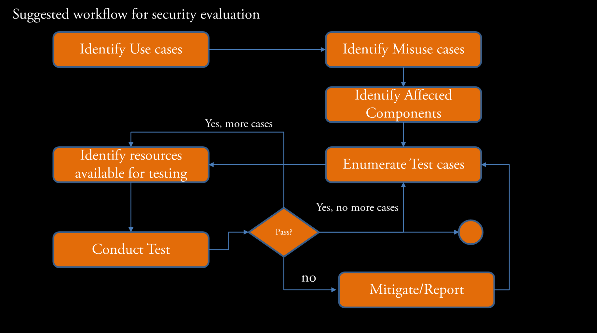
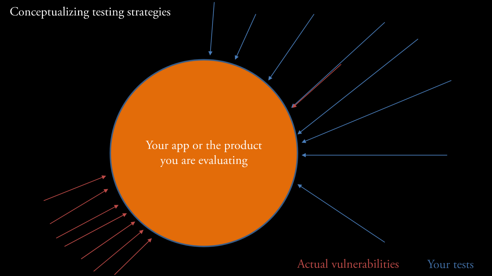
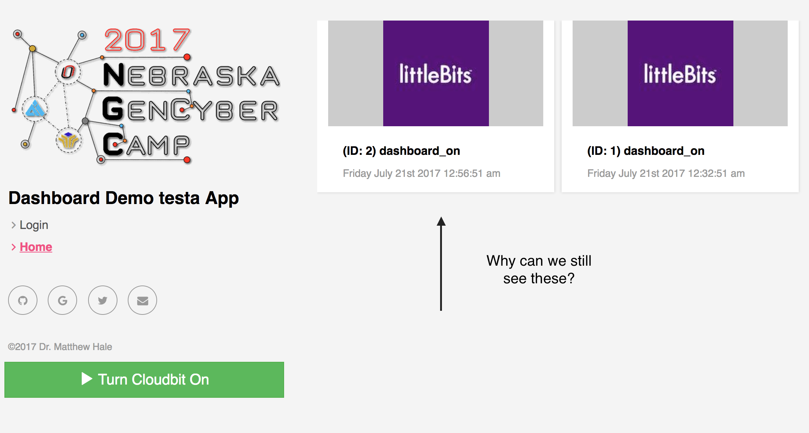
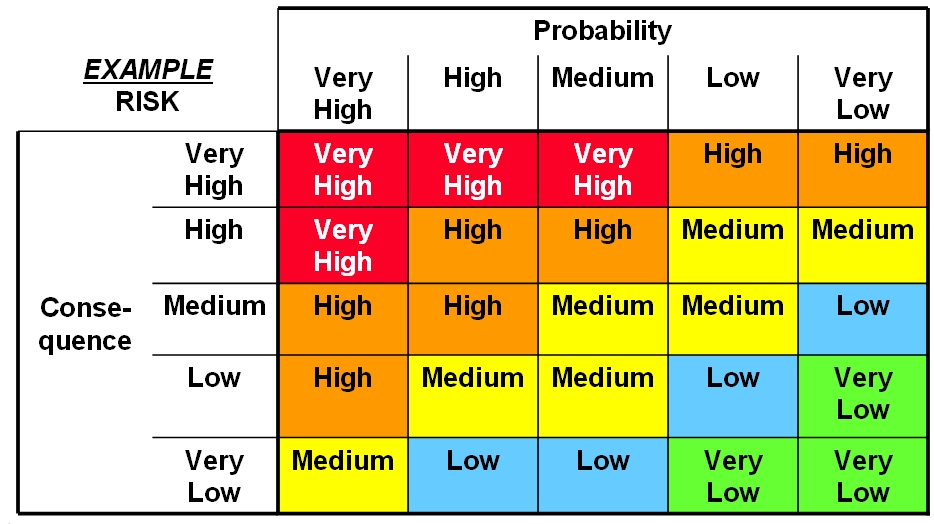

Penetration testing
Cybersecurity First Principles in this lesson
-
Abstraction: An abstraction is a representation of an object or concept. It could be something such as a door, a speedometer, or a data structure in computer science. Abstraction decouples the design from the implementation. The gauges in an automobile are an abstraction of the performance of a car. A map is an abstraction of the earth.
-
Data Hiding: Data hiding is the technique that does not allow certain aspects of an object to be observed or accessed. Data and information hiding keeps the programmer from having complete access to data structures. It allows access to only what is necessary.
-
Layering: Cyber security uses multiple layers of defense or protecting information. If one layer is defeated the next layer should catch it.
-
Least Privilege: One of the ways to protect information is by limiting what people can see and do with your information and resources. The principle of least privilege says to allow the minimum number of privileges necessary to accomplish the task.
-
Minimization: Minimization refers to having the least functionality necessary in a program or device. The goal of minimization is to simplify and decrease the number of ways that software can be exploited. This can include turning off ports that are not needed, reducing the amount of code running on a machine, and/or turning off unneeded features in an application.
-
Modularization: The concept of modularity is like building blocks. Each block (or module) can be put in or taken out from a bigger project. Each module has its own separate function that is interchangeable with other modules.
-
Resource Encapsulation: Encapsulation is an object oriented concept where all data and functions required to use the resource are packaged into a single self-contained component. The goal is to only allow access or manipulation of the resource in the way the designer intended. An example, assume a flag pole is the object. There are fixed methods on how the flag pole is to be used. Put the flag on, take the flag off, raise or lower the flag. Nothing else can be done to the flag pole.
-
Simplicity: Simplicity allows a person to better understand hardware and software. Without the clutter of unnecessarily complicated code and interfaces, the software will be more understandable by people that will update the code when requirements change. It will be easier to understand by the testers and they will be able to spot problems sooner. By keeping software as simple and as focused as possible, the reliability and security is greatly increased.
Introduction
In this module, you will probe the server you created before to see how insecure API endpoints can be.
Goals
By the end of this tutorial, you will be able to:
- Use a REST Client to make malicious
POSTandGETrequests to anAPI - Identify and understand basic
software testingparadigms - Identify
software weaknessesin API endpoints - Trace exploit
weaknessesto identifyvulnerabilities - Conduct a
risk assessment
Materials Required
For this lesson, you will need:
- PC
- Internet connection
- Little bits cloud bit and API Key
- Little bits sensor and actuator
Prerequisite lessons
While not required, you should consider completing the following lessons before proceeding with this one.
- Intro to Components using Littlebits Droids
- Web Services and IoT using Littlebits and IFTTT
- Understanding REST and APIs
(optional if you want to build the server you are penetration testing)
Table of Contents
- [Cybersecurity First Principles in this lesson](#cybersecurity-first-principles-in-this-lesson)
- [Introduction](#introduction)
- [Goals](#goals)
- [Materials Required](#materials-required)
- [Prerequisite lessons](#prerequisite-lessons)
- [Table of Contents](#table-of-contents)
- [Step 1: Where we left off](#step-1-where-we-left-off)
- [Step 2: Key Penetration Testing Concepts](#step-2-key-penetration-testing-concepts)
- [Step 3: Penetration testing process](#step-3-penetration-testing-process)
- [Step 4: Getting started testing in POSTMAN](#step-4-getting-started-testing-in-postman)
- [Step 5: Exploring Authentication and permissions](#step-5-exploring-authentication-and-permissions)
- [Step 6: Examine the attack surface of our app](#step-6-examine-the-attack-surface-of-our-app)
- [Step 7: Exploring the `home` method](#step-7-exploring-the-home-method)
- [Step 8: Explore the `ActivateCloudbit` endpoint](#step-8-explore-the-activatecloudbit-endpoint)
- [Step 9: Perform a similar analysis on the other endpoints](#step-9-perform-a-similar-analysis-on-the-other-endpoints)
- [Step 10: Exploring Error Handling Behavior](#step-10-exploring-error-handling-behavior)
- [Step 11: Risk Assessment - Summarizing your test results](#step-11-risk-assessment---summarizing-your-test-results)
- [Checkpoint](#checkpoint)
- [Additional Resources](#additional-resources) - [Lead Author](#lead-author)
- [Acknowledgements](#acknowledgements)
- [License](#license)
Step 1: Where we left off
When we left off, you had created an endpoint to make the button work to send a message to your cloudbit. We had to store our API key on the server to make this work. Our endpoint accepted a POST request to turn on the device. We also integrated our server with Littlebits API to subscribe to events that occurred on the cloudbit.
In this lesson, we will take a look at the security implications of this service integration to see how our server isn’t well protected against attacks.
Step 2: Key Penetration Testing Concepts
Penetration testing is a special kind of software testing that evaluates the attack surface of an application for potential software weaknesses that if left unaddressed can lead to exploitable vulnerabilities. At the end of a penetration test, testers have more information about their product and more assurance that it will operate correctly in the real world. This section overviews the basics of testing.
At its core, penetration testing, is about trying to make an app do something it wasn’t designed for and discover oversights or problems in the implementation and design.
First of all, what is this?
Image credit: Bruegge and Dutoit, Object-oriented Software Engineering: Using UML, Patterns, and Java, Prentice Hall, 2010
-
It all depends on what the goal of the app is. Maybe this is how it is supposed to work - but probably not.
Errorsare when things are about to go wrong. The system enters anerror stateFaultsare the root causes oferrorsFailuresoccur after errors and can potentially bring down or harm other systems leading to more errors and failures.
Image credit: Bruegge and Dutoit, Object-oriented Software Engineering: Using UML, Patterns, and Java, Prentice Hall, 2010
Reasons for Errors
There can be many different scenarios that lead to errors.
- Maybe the design is bad.
- Maybe something went wrong with the implementation (an
algorithm fault) - Maybe something occurs in the deployment environment that changes the setup and causes a
mechanical fault
Image credit: Bruegge and Dutoit, Object-oriented Software Engineering: Using UML, Patterns, and Java, Prentice Hall, 2010
Image credit: Bruegge and Dutoit, Object-oriented Software Engineering: Using UML, Patterns, and Java, Prentice Hall, 2010
What can we do about errors and faults?
We can Test! The goal of testing is to discover faults before they lead to errors. Once we know what is wrong, we can mitigate it in some way to prevent it from becoming an issue.
- Testing often means traversing the different ways in which your app operates.
- This is especially true for
penetrationtests which identifysecurity faults(commonly known assoftware weaknesses).

Image credit: Bruegge and Dutoit, Object-oriented Software Engineering: Using UML, Patterns, and Java, Prentice Hall, 2010
- Once we know, from testing, that
faultsexist, we canpatchour code to remove it and prevent errors.
Image credit: Bruegge and Dutoit, Object-oriented Software Engineering: Using UML, Patterns, and Java, Prentice Hall, 2010
- Another option is to design our app from the beginning to handle faults better by design. This is a concept called
redundancy. Redundancy is vitally important for high-criticality systems like those that are operated by NASA, The Department of Defense, and others.Redundancyhelps, in combination with patching, to ensure that iferrorsdo occur they don’t causefailuresbefore they can be patched.
Image credit: Bruegge and Dutoit, Object-oriented Software Engineering: Using UML, Patterns, and Java, Prentice Hall, 2010
- You can also embrace the chaos. It usually doesn’t go well…
Image credit: Bruegge and Dutoit, Object-oriented Software Engineering: Using UML, Patterns, and Java, Prentice Hall, 2010
- Author note: I love these images from Bruegge and Dutoit!
Step 3: Penetration testing process
Ok, so we understand the basics of testing. How do developers think about penetration testing?
Often use cases and user stories are used to define what a system should be doing.
- For our app, some user stories might be:
- As a cloudbit owner, I want to control my lights from my phone, so that I don’t have to get off the couch to turn them on or off.
- As a cloudbit owner, I want to view previous device events, so that I know when my device was used.
Once you know what the app should do, you can define misuse cases or misuser stories that describe how bad actors might abuse or impair the use cases and user stories. These misuse scenarios guide the kind of penetration testing you might do.
Anytime your app is on the internet you end up having a basic set of misuse cases that revolve around the exploitation of web resources for nefarious purposes.
A short list of misuse cases includes:
- Data theft
- User data exfiltration
- Hostile server takeover
These goals, which can be written like user stories often involve some form of web-based-attack. We are going to look at our server, created in the previous lesson to see where it may have weaknesses that leave it vulnerable to attack.
In general, you can follow this flow chart for thinking about penetration testing (and testing in general):

- A
test caseis just a series of steps to see if the test fails or succeeds - A
mitigationis a process to correct thefaultsidentified during testing.
Test Coverage
In practice, when you are evaluating real-world apps, you want to have strong coverage across the app’s attack surface to ensure you don’t miss something by being too focused in one particular area.
I like to think of tests graphically:

- In this example, most of the tests that have been conducted are located on part of the app that (as it turns out) doesn’t have many vulnerabilities. These tests identify one
weakness(upper right) that leads to avulnerabilitybut miss a highly vulnerable area of the app (lower left). - Maybe this vulnerable area is a
componentthat is outdated or not well designed.
Unfortunately, the surface is not the only place where vulnerabilities can occur.

Attack vectors(i.e. pathways that exploitweaknessesto producevulnerabilities) can sometimes use identified vulnerabilities to get access to other areas in your app. Those internal components might be lesshardenedagainst attack.- Takeaway: It is important to test all of your components and surfaces.
Step 4: Getting started testing in POSTMAN
We’ve created this pretty cool API and nice client-side interface to use it. However, as you will see, our API is, by default, pretty insecure! In the next sections, we will see just how bad it is by using some penetration tests to identify and highlight problems.
The server has already been developed and deployed to http://137.48.191.180/ for you.
- Start off by logging into the server. Go to http://137.48.191.180/admin/ The login credentials are:
username: admin
password: admin1234
Note: This lesson can be run locally and stand-alone, for more information see see stand-alone setup below.
- Next open
POSTMANand sending a simpleGETrequest to your local server athttps://137.48.191.180. - What do you get?
- Now try sending a
GETrequest tohttps://137.48.191.180/api/deviceevents - What do you see?
Step 5: Exploring Authentication and permissions
The first issue on our server is that it doesn’t enforce authentication. This violates the least privilege first principle because anonymous users should only be able to login, not see or interact with data.
- Lets go back to our browser and go to http://137.48.191.180.
- If you are logged in, click
logout
Note your data items probably look slightly different than mine, since I am developing this lesson and haven’t loaded much data in the app!
- click
homeafter logging out - What do you see?

Note your data items probably look slightly different than mine, since I am developing this lesson and haven’t loaded much data in the app!
What gives? Our data is still visible when we are logged out.
This is because our server is not enforcing authentication on its API endpoints.
That means that anyone can get this data?
Yeah pretty much.
Lets confirm this from POSTMAN:
- open your
POSTMANwindow - Make a
GETrequest tohttps://137.48.191.180/api/deviceevents

Note your data items probably look slightly different than mine, since I am developing this lesson and haven’t loaded much data in the app!
- Notice that we have no headers in the request and we are not sending username/password or any kind of key as part of the request. It just works!
- This means that we can get all of the device event data on the server without even logging in!
Step 6: Examine the attack surface of our app
For advanced classes, students could explore the actual code that causes this error. For an introduction to pen testing, you can skip to step 8 Our web server exposes several endpoints for end-user consumption, look at the files
django_backend/urls.pyand/api/urls.pyin ournebraska-gencyber-dev-envfolder. From these we see that the urls accepted by our server are:
/admin/<approved admin urls>-> Django admin package/api-auth/<approved rest_framework urls>-> Rest api-auth package/api/session-> controllers.Session (Class)/api/register-> controllers.Register (Class)/api/deviceevents-> controllers.DeviceEvents (Class)/api/activatecloudbit-> controllers.ActivateCloudbit (Class)css-example/-> controllers.css_example (method that demonstrates cross-site scripting),/*-> controllers.home (Single Method that serves up our frontend client)
For our purposes, we will assume that the open source, highly reviewed, and security tested code from the Django Admin Package and the Django REST Framework library have been sufficiently assessed.
NOTE: In practice, you want to be careful about making too many assumptions about the security of third party libraries.
That means we need to assess the security of each of the other endpoints.
Step 7: Exploring the home method
Starting from the bottom up, the first method of interest is the home method in controllers.py.
This method simply returns an index.html file.
def home(request):
"""
Send requests to / to the ember.js clientside app
"""
return render_to_response('ember/index.html',
{}, RequestContext(request))
Where does index.html come from? We can answer that question by looking in the django_backend/settings.py file:
You will see:
TEMPLATES = [
{
'BACKEND': 'django.template.backends.django.DjangoTemplates',
'DIRS': [os.path.join(BASE_DIR, "static/ember/")],
'APP_DIRS': True,
'OPTIONS': {
'context_processors': [
'django.template.context_processors.debug',
'django.template.context_processors.request',
'django.contrib.auth.context_processors.auth',
'django.contrib.messages.context_processors.messages',
],
},
},
]
This configuration setting joins the operating system’s BASE_DIR (or base directory) to the static/ember/ directory. This means, it looks for /<path-where-django-exists>/static/ember/. For us that is /nebraska-gencyber-dev-env/backend/static/ember/. If we look in that folder we will see the index.html file that loads in the javascript and other files associated with the client you have been looking at all of this time when you visit https://137.48.191.180
In practice you would need to do a full assessment of the client. For now, we will assume it is ‘safe’ from the point of view of the server.
Overall, our server should assume that clients can be compromised and, therefore, focus on securing any backend functionality. This follows a defense in depth approach.
What Cybersecurity First Principle might that be?
Step 8: Explore the ActivateCloudbit endpoint
Next up is the ActivateCloudbit class. We created this controller in the previous lesson. Since this endpoint includes a POST request handler, we should carefully review and assess it.
First Question
The first question is does it require authentication? Authentication should be used anytime you want to restrict access to data as part of an effort of information hiding.
Should ActivateCloudbit require authentication?
Keep track of your answers.
Second Question
Since it accepts data as part of the POST request, the second question is related to how it checks the data submitted in the request. It is important to check any data submitted to a server to ensure that it conforms to accepted types. This is called type checking and is referred to in the web world as parameterization or parameterized requests.
What data does our method accept?
Does it type check the data?
Is our method an example of a parameterized request?
Third Question
Sometimes you want to restrict access to data based on who is making the request (and sometimes why they are making it). This is the principle of least privilege - that is, only give access to people that need it when they need it. When looking at specific data objects a question to ask in the risk assessment process is whether or not object-level permissions are used to check access.
In our case, the question is ‘does our method restrict who can make the POST request?’ Assuming authentication was put in place, who has access?
Answering Question 1 (Authentication)
Lets evaluate authentication. This one is easy. Looking at the code we see the line: permission_classes = (AllowAny,) in the ActivateCloudbit class. This, as the name implies, literally allows anyone to access this method. We can confirm this in POSTMAN.
- Open
POSTMAN - Issue the following request:
Headers:
{
"Content-Type": "application/json"
}

Body:
{
"eventtype": "test",
"timestamp": 1500681745
}
- If you send the request when your
cloudbitis disconnected you will get:

- If you connect it, you should get:

In either case, we were able to execute the method without logging in. So clearly, authentication is not required here. It should be - since our cloudbit could otherwise be turned on by anyone.
Answering Question 2 (Parameterization)
The next question was whether or not the request is parameterized. Looking at our post method we see that it only accepts two input fields from the requestor. Everything else is collected elsewhere:
eventtype = request.data.get('eventtype')
timestamp = int(request.data.get('timestamp'))
We also see that overall, the method uses the DeviceEvent model schema to create a new event.
newEvent = DeviceEvent(
device=device,
eventtype=eventtype,
power=-1,
timestamp=datetime.datetime.fromtimestamp(timestamp/1000, pytz.utc),
userid=userid,
requestor=requestor
)
The DeviceEvent method is parameterized by definition - i.e. each of the fields are typed in the definition of the model:
class DeviceEvent(models.Model):
device = models.ForeignKey(Device, on_delete=models.CASCADE, related_name='events')
eventtype = models.CharField(max_length=1000, blank=False)
power = models.IntegerField()
timestamp = models.DateTimeField()
userid = models.CharField(max_length=1000, blank=True)
requestor = models.GenericIPAddressField(blank=False)
def __str__(self):
return str(self.eventtype) + str(self.device)
The only fields of concern here are eventtype and timestamp. We need to ensure that these fields are character (string) and integer fields respectively. Since accepting arbitrary string data is bad, it is also a good idea to not allow any raw special characters or symbols that can be used for nefarious purposes (like the keyword javascript or parentheses and slashes). For these characters, you want to either remove them or escape them.
Let’s test our fields.
- Send a request with string data in the
timestampfield

What happened? Oops, we caused the server to generate a 500 error. This happened because it tried to turn an arbitrary string into an int i.e. timestamp = int(request.data.get('timestamp')). It is good that it didn’t accept it, but it is bad that it crashed!
- lets change the
timestampback and try to send across-site scripting attackusing the event field.

{
"eventtype": "<script type='text/javascript'>alert('Cookie'+document.cookie)</script>",
"timestamp": 1500681745
}
- It worked! We can send any string text to our app.
- The good news is that
Djangoautomaticallyescapesthe string before storing it in the database. - The other good news is that our client also
escapedthe string before inserting it into the page. - The bad news is that if a client rendered that string as
HTMLbad stuff would happen.
To show you how bad storing arbitrary string text can be, the skeleton code includes an endpoint we have ignored up to this point called css_example. This stands for cross-site scripting example. The code for the example is loaded in a stand-alone index.html file in the nebraska-gencyber-dev-env/backend/static/dumb-test-app folder. Specifically, this dumb client includes the following (fairly typical) javascript method that is often used for loading data.
<html>
<head>
<script src="http://code.jquery.com/jquery.js"></script>
<script type="text/javascript">
$.get('../api/deviceevents').then(function(events){
console.log(events)
events.forEach(function(event){
$('#this-is-bad').append("<br>");
$('#this-is-bad').append('<p>Event id:' + event.pk + ' eventtype data below:' +'</p>');
$('#this-is-bad').append(event.fields.eventtype)
$('#this-is-bad').append("---------------------------------------------------<br>");
});
});
</script>
</head>
<body>
<div id='this-is-bad'>
<h5>This field loads in whatever data is available. This is bad. Every event loaded will be appended as a new div below this line.</h5>
<p>------------------------------------------------------------------------------------------------------------</p>
</div>
</body>
- In this html file we see that it includes
jqueryand then uses the$.getajax method to make aGET Requestto the server api, get the deviceevent data, and then use theappendmethod to load it into the page. - While this type of data loading is quite typical in many web applications it is highly vulnerable to a type of
cross-site scripting (XSS)attack calledstored cross-site scripting. - In our case, our server
API endpointdid not filter the string text, so it allows for XSS text to be stored as a string. When the client loads the data from the server, itrenders it as HTMLcausing the XSS attack to succeed and a popup to be generated.
If you visit, https://137.48.191.180/css_example/ you can see this Stored XSS attack in action.

Answering Question 3 (Object Level Permissions)
In this case, our method doesn’t use authentication, so it doesn’t use object-level permissions by default. If we did add authentication and wanted to check for object-level permissions. We would need to check that the code checks not just if the user is authenticated but also if they have permissions on that object to do what they are asking to do.
We will come back to this in the next lesson.
Step 9: Perform a similar analysis on the other endpoints
Look at the other URLs our app makes use of. Ask yourself similar questions and back them up with some tests. Keep track of the results you find as you go along.
Step 10: Exploring Error Handling Behavior
Earlier, in Step 7 we saw that sending a string in the timestamp field generated the following error message:
The problem here is not just that the field is mishandled, but that the error gives FULL DETAILS ABOUT THE SERVER CONFIG. As you can imagine listing out all the server details is bad practice.
Accidentally revealing server information is a big problem. While this info is really helpful during development, it can expose the server if users see it in production. You can turn off debug information by setting a DEBUG = False in the /django_backend/settings.py file.
You could return to this in an advanced course to explore mitigation techniques
Step 11: Risk Assessment - Summarizing your test results
For now, lets summarize the test results that we have collected to identify what our risks look like. Usually, risks are collected and then ranked according to severity (or impact) and likelihood (i.e. how probable an attack is to occur). In organizations or systems with many risks, preventing all of them isn’t always feasible. Risk prioritization can help you decide which threats to focus on first and which vulnerabilities need to be mitigated most.

Based on the risks you’ve identified, score them and rank them based what you think the likelihood and impact of exploitation might be. While our list is small (and we can mitigate all of the problems) - this tool is useful when you have limited time, money, and other resources.
Checkpoint
Lets review what we’ve learned.
Additional Resources
For more information, investigate the following.
- http://developers.littlebitscloud.cc/ - API reference for the Littlebits web service.
- Bruegge and Dutoit, Object-oriented Software Engineering: Using UML, Patterns, and Java, Prentice Hall, 2010
Stand Alone Lesson Setup
If you want to run this lesson without running Building a server you can run the following commands.
Open a Powershell terminal and change directory to your Desktop:
git clone https://github.com/MLHale/nebraska-gencyber-dev-env --recursive
cd nebraska-gencyber-dev-env
cd backend/
git checkout tags/step10-server
cd ..
docker-compose build
docker-compose run django bash
python manage.py flush
python manage.py makemigrations
python manage.py migrate
python manage.py createsuperuser --username admin --email admin
exit
docker-compose up
Now, in Atom, open the /nebraska-gencyber-dev-env/backend/django_backend/settings.py file.
find the line marked:
ALLOWED_HOSTS = ['137.48.185.230', 'localhost']
Replace ‘137.48.185.230’ with your ip address.
- to get your server ip, you need to open a
Powershelland type:ipconfig --all - find your ipv4 address on the ip record for the ethernet card attached to your machine
- alternatively, you can go to http://google.com and search for ‘my ip address’
Also be sure to login to http://localhost/admin/ and add your API key by clicking Api keys and then Add Api Key. If you forgot it or don’t have your key handy, you can retrieve it by visiting http://control.littlebitscloud.cc/ and clicking on settings. Set owner to admin and then click save to store it.
Alternative stand alone lesson setup
If you want to host a single copy of the server, do so and then just point students towards that machine ip.
Lead Author
- Matt Hale
Acknowledgements
Special thanks to Dr. Robin Gandhi, Andrew Li, and April Guerin for reviewing and editing this module.
License
Nebraska GenCyber 
is licensed under a Creative Commons Attribution-NonCommercial-ShareAlike 4.0 International License.
Overall content: Copyright (C) 2017-2018 Dr. Matthew L. Hale, Dr. Robin Gandhi, Dr. Briana B. Morrison, and Doug Rausch.
Lesson content: Copyright (C) Dr. Matthew Hale 2017-2018.
This lesson is licensed by the author under a Creative Commons Attribution-NonCommercial-ShareAlike 4.0 International License.